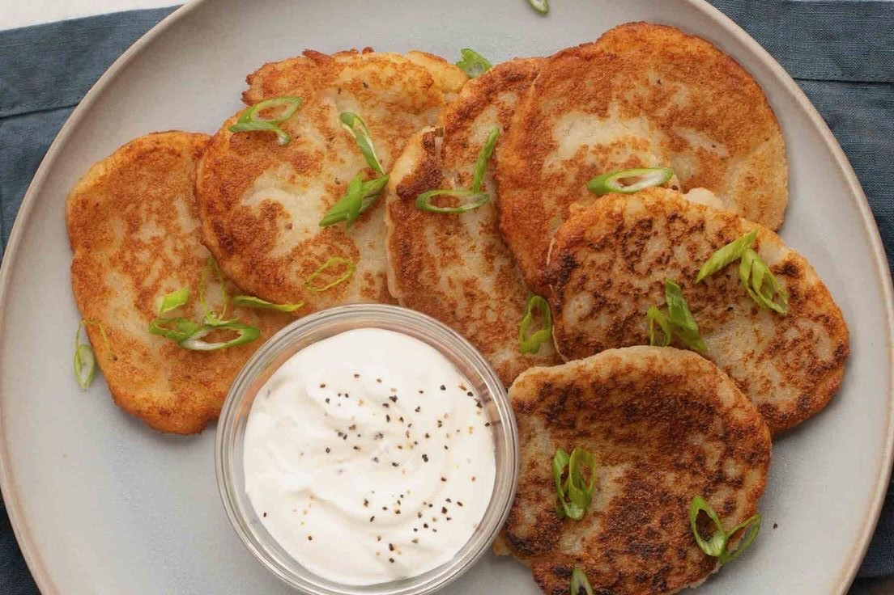
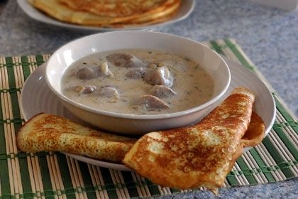

Najpopularniejsze Dania Białoruskie
Draniki (Śniadanie)
Draniki są tradycyjnym białoruskim daniem z tartych ziemniaków. Są to placki ziemniaczane, które są smażone na złoty kolor.
Składniki:
- 1 kg ziemniaków
- 1 cebula
- 1 jajko
- 2 łyżki mąki
- Sól i pieprz do smaku
- Olej do smażenia
Przygotowanie:
- Obierz i zetrzyj ziemniaki oraz cebulę na tarce.
- Odcedź nadmiar płynu.
- Dodaj jajko, mąkę, sól i pieprz, dobrze wymieszaj.
- Smaż placki na rozgrzanym oleju, aż będą złociste z obu stron.
Barszcz (Obiad)

Barszcz to tradycyjna białoruska zupa z buraków, która jest popularna w wielu krajach Europy Wschodniej.
Składniki:
- 500 g buraków
- 2 marchewki
- 1 cebula
- 2 ziemniaki
- 1/4 główki kapusty
- 2 litry bulionu
- 3 łyżki koncentratu pomidorowego
- Sól, pieprz, liść laurowy
- Kwaśna śmietana do podania
Przygotowanie:
- Obierz i pokrój warzywa w kostkę.
- W dużym garnku podsmaż cebulę, marchew i buraki.
- Dodaj ziemniaki, kapustę, bulion i przyprawy.
- Gotuj na wolnym ogniu przez około 1 godzinę.
- Dodaj koncentrat pomidorowy i gotuj przez kolejne 10 minut.
- Podawaj z kwaśną śmietaną.
Machanka (Kolacja)
Machanka to tradycyjna białoruska potrawa mięsna, często podawana z naleśnikami lub plackami ziemniaczanymi.
Składniki:
- 500 g wieprzowiny
- 2 cebule
- 2 ząbki czosnku
- 1 szklanka śmietany
- 1 łyżka mąki
- Sól, pieprz, liść laurowy
- Olej do smażenia
Przygotowanie:
- Pokrój wieprzowinę w kostkę i podsmaż na oleju.
- Dodaj pokrojoną cebulę i czosnek, smaż aż zmiękną.
- Dodaj mąkę i smaż przez 1 minutę, następnie dodaj śmietanę i przyprawy.
- Gotuj na wolnym ogniu przez 20-30 minut, aż mięso będzie miękkie.
- Podawaj z naleśnikami lub plackami ziemniaczanymi.